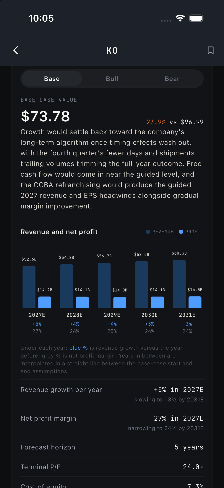

How to Write an Investment Thesis for a Stock (or Get One Built for You)
An investment thesis is the reason to own a stock: what to believe about the business, why the price doesn't reflect it yet, and what would prove it wrong. Here's what a strong thesis contains, how to build one yourself, and how to get one built for a US-listed stock in about 7 minutes.
What is an investment thesis?
An investment thesis is a short, written argument for buying, holding or selling a specific stock. It states what you believe about the business, why you think the market price doesn't reflect it yet, how much you think the stock is worth, and which developments would change your mind.
Investment funds publish theses about the kinds of companies they back. For an individual stock investor, a thesis is more personal and more specific: it is the reasoning behind one position, worked out before you buy.
A good thesis fits on one page. If you can't explain why you own a stock in a few sentences, you probably don't have a thesis yet. You have a feeling.
Why every stock you own needs a thesis
- It separates evidence from story. Exciting narratives are easy to believe. A thesis breaks the story into specific claims, so you can see which parts the evidence actually supports.
- It tells you what's already priced in. A great company at the wrong price is a bad investment. A thesis puts a value on the business before you look at the chart.
- It tells you when you'd be wrong. A good thesis names the events that would break it, so a sharp drop doesn't leave you guessing whether to hold or sell.
- It sizes your conviction. A thesis resting on three solid facts deserves more confidence than one resting on a single hope.
In short, it's the opposite of a hot tip.
The 6 parts of a strong stock investment thesis
1. The one-sentence view
State your call and your time horizon in one sentence. "Over the next 12 to 18 months, Company X should grow earnings faster than the market expects because its new segment is reaching profitability, and the current price doesn't reflect that." Everything else in the thesis supports or tests this sentence.
2. How the business makes money
Describe the products, the customers, the segments that matter, and the competition, in plain words. The best source is the business section of the company's annual report (the 10-K for US companies). If you can't explain where the revenue comes from, you can't judge what will change it.
3. The key drivers: two to four claims that must be true
This is the heart of the thesis. Break your view into specific, checkable claims: "Cloud revenue keeps growing above 20% a year," "Operating margin expands as the new plant ramps up," "Customer churn stays below 5%." Each claim should be something you can confirm or refute with future earnings reports, not a vague belief like "great management."
4. Valuation: what's already priced in
A great company can be a bad investment at the wrong price. Estimate what the business is worth under three scenarios:
- Bear case: your key drivers disappoint. What is the stock worth then?
- Base case: things play out roughly as you expect.
- Bull case: the drivers beat expectations.
Write down the assumptions behind each one (revenue growth, profit margins, the multiple the market might pay) so you can see exactly what the price implies. If the current price already needs the bull case to come true, the upside is thin.
5. The bear case and what would prove you wrong
Write the strongest argument against your position, as if a smart short-seller were making it. Then set clear "thesis breakers": specific events that would make you sell, such as two quarters of falling margins, losing a key customer, or management abandoning guidance. This is the part most investors skip, and the part that saves the most money.
6. Catalysts and time horizon
What could make the market recognise the view, and when? Earnings reports, product launches, debt refinancing, a spin-off. Name the numbers that will show whether the thesis is playing out, and the time frame you expect it to play out in.
How to build one yourself, step by step
- Read what the business actually does. Start with the business overview in the annual report: segments, customers, competition, supply chain.
- Look at ten years of fundamentals. Revenue, net profit, margins and free cash flow over a full cycle show you the trend, not a single good year.
- Read the last four earnings calls. Management's guidance, how they answer tough questions, and how their tone changes from quarter to quarter tell you more than any single press release.
- Build bull, base and bear valuations. Write down the assumptions for each, and compare the results with today's price.
- Steelman the bear case. Look for the strongest counter-arguments, and note anything in the evidence that contradicts your view.
- Pull it into a one-page thesis. Use the template below, and note the date and the price it was built at.
- Rebuild it when new results land. A thesis is only as good as its latest evidence. When a company reports earnings, refresh the research instead of relying on last quarter's view.
Done properly, this takes an experienced analyst several days per company. That's the main reason most individual investors skip it, and why Thesis does it for you.
Investment thesis template
Use this structure to build your own thesis, or to check any thesis you read, including one from Thesis.
INVESTMENT THESIS: [Company] ([TICKER])
Date: [YYYY-MM-DD] Price today: $[ ]
Call: [Buy / Hold / Sell] Conviction: [High / Medium / Low]
Time horizon: [e.g. 12–18 months]
1. ONE-SENTENCE VIEW
[What I believe, and why the price doesn't reflect it yet.]
2. HOW THE BUSINESS MAKES MONEY
[Main products and segments, customers, competitors.]
3. KEY DRIVERS (must be true)
a) [Specific, measurable claim]
b) [Specific, measurable claim]
c) [Specific, measurable claim]
4. VALUATION
Bear case: $[ ] assumes [growth, margin, multiple]
Base case: $[ ] assumes [growth, margin, multiple]
Bull case: $[ ] assumes [growth, margin, multiple]
Upside/downside to base case: [ ]%
5. BEAR CASE
[Strongest argument against this position.]
Thesis breakers (I sell if):
- [Event]
- [Event]
6. CATALYSTS AND TIME HORIZON
Catalysts: [Upcoming events and dates]
Numbers that prove it right or wrong: [Metrics]Common mistakes
- Writing a story, not claims. "AI will change everything" is not a thesis. "Data-centre revenue grows more than 30% a year for the next two years" is.
- Skipping valuation. Being right about the business and still losing money because you overpaid is the most common way good research goes wrong.
- No exit criteria. Without thesis breakers named in advance, every bad quarter becomes "a buying opportunity."
- Only collecting evidence that agrees. If you can't state the bear case convincingly, you haven't looked hard enough.
- Too many reasons. Ten reasons to own a stock usually means none of them is decisive. Two to four strong drivers beat a long list.
- Relying on stale research. A thesis built on last year's numbers can be wrong today. Rebuild it when new results come out.
Or let Thesis build it for you
You don't have to write it yourself. Search a US-listed stock and Thesis does steps 1 to 6 for you and builds the investment thesis in about 7 minutes: a clear call with a conviction level, the key claims marked as supporting or tempering the view, the key risks to watch, and a bull, base and bear valuation with every assumption shown.


Screenshots are examples from the app, shown for illustration only. They are not recommendations.
Get an investment thesis for 1,500+ US-listed stocks in about 7 minutes
Thesis does the research above for you: the business, ten years of fundamentals, the last four earnings calls, bull, base and bear valuation, and the key risks. You get a clear verdict you can check. Your first report is free.
Investment thesis FAQ
How long should an investment thesis be?
One page is enough for most stocks: a one-sentence view, two to four key drivers, a valuation range, the bear case with clear thesis breakers, and the catalysts you are watching. Longer is not better if the core argument gets lost.
What should an investment thesis include?
The six core parts are a one-sentence view with a time horizon, how the business makes money, two to four key drivers that must be true, a bull, base and bear valuation, the bear case with thesis breakers, and the catalysts and numbers that will show whether it plays out.
Do I have to write an investment thesis myself?
No. Building one yourself teaches you a lot about a company, but it takes days of research per stock. Thesis researches US-listed stocks and builds the investment thesis for you in about 7 minutes, with the view, the key claims, a bull, base and bear valuation, and the risks that would change the call.
What is the difference between an investment thesis and a stock pitch?
A pitch is written to persuade someone else to buy. A thesis is built to test an idea honestly: it gives equal weight to the bear case and states in advance what would prove it wrong.
Can AI write an investment thesis for a stock?
Yes. AI research tools like Thesis can research a US-listed company and write an investment thesis with a clear call, a conviction level, the key claims, a bull, base and bear valuation, and the risks that would change the view. Treat it as a starting point you check, not as financial advice.
This guide is for educational purposes only and is not financial advice. Thesis is not a registered investment adviser or broker-dealer. Investing involves risk, including the possible loss of principal.